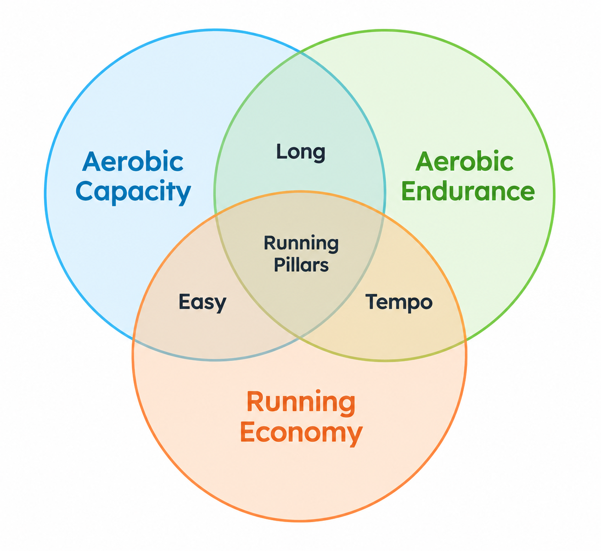
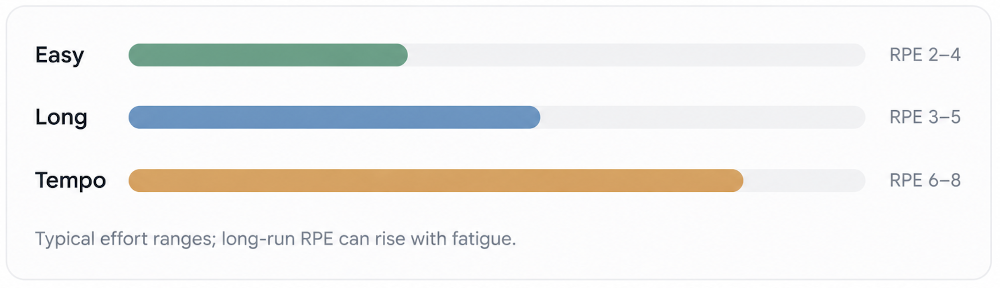
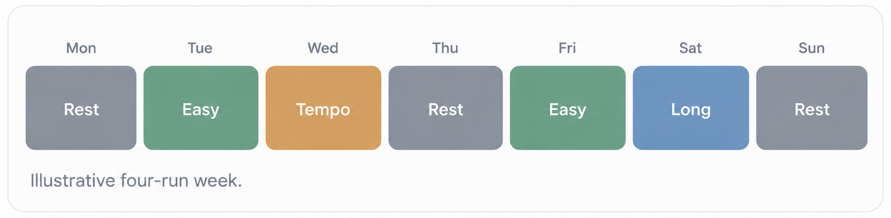

Running – A Breakdown
I started running in 2024 to prepare for the Toronto Waterfront Half Marathon, training mostly off vibes. After the race, I became interested in the physiology behind running. However, the amount of information online was overwhelming, often describing similar concepts in different ways. As I researched running performance, a few common principles began to emerge. This article is my attempt to organize those principles into a simple framework for understanding the science behind running.
Key Ideas
The Pillars of Running
From a high level, I believe that distance running can be broken down into three pillars:
- Aerobic capacity – How much energy the body can produce using oxygen
- Aerobic endurance – How long the body can sustain an effort
- Running economy – How efficiently the body converts energy into motion
Aerobic simply means using oxygen to produce energy. Think of aerobic capacity as the size of your engine, endurance as how much of that engine you can sustain, and economy as how efficiently you use its energy.
Although interconnected, these pillars provide a useful framework for understanding running performance. Nearly every run contributes to improving one or more of them.
Types of Running
Distance-running training can be simplified into three fundamental types:
- Easy Runs – Comfortable, low-intensity running
- Long Runs – Extended periods of running
- Tempo Runs – Sustained, moderately hard to hard efforts
Relating to the three pillars, easy runs primarily develop aerobic capacity while supporting running economy. Long runs develop aerobic capacity and endurance, while tempo runs improve sustainable intensity, with potential benefits to running economy.

These pairings are simplifications, not exclusive benefits. Importantly, easy and tempo describe intensity, while long describes duration. Most long runs are therefore also easy runs, just extended over a longer period.
Other workouts, such as intervals and strides, serve more specialized purposes and will be explored later.
Classifying the Run
Training combines easy, long, and tempo runs to develop all three pillars. A useful way to distinguish them is through rating of perceived exertion (RPE), a subjective measure of effort from 1–10.
- Easy (RPE 2–4): Comfortable enough to hold a conversation.
- Long (RPE 3–5): Usually easy, but increasingly tiring over time.
- Tempo (RPE 6–8): Controlled but challenging, with conversation limited to short phrases.

These ranges are approximate, and pace is relative to each runner's fitness.
Why not just run hard every time? Different intensities and durations encourage different adaptations. Easy runs build aerobic fitness with manageable fatigue, long runs develop endurance, and tempo runs improve our ability to sustain faster efforts.
Building a Simple Training Week
An established distance-running routine might include several easy runs, one long run, and one harder workout, such as a tempo run.
Most running is kept easy to accumulate training volume without excessive fatigue. Harder workouts provide a greater training stimulus but require more recovery, while long runs add the challenge of duration.

The goal is to balance training stimulus and recovery. Running harder or longer isn't always better, especially when fatigue compromises subsequent workouts or increases injury risk.
Most importantly, consistency matters more than intensity. Starting with easy runs, gradually increasing volume, and introducing harder workouts as fitness develops is generally more productive than maximizing every session.
Ultimately, effective training isn't about making every run difficult. It's about combining different efforts in a way that allows the body to adapt over time.
Science and Numbers
This section is currently under construction.
Resources & References
A collection of resources I found helpful while learning about running and training.